这个数字能说明什么
检查器识别到的引文中，有多少能在原 JD 中逐字连续找到。省略号、标点差异与片段拼接都可能导致未匹配。
AI PRODUCT CASE STUDY
把岗位要求、个人经历与下一步行动连接起来的 AI 求职决策辅助探索。
Figma Make / Dify / LLM / Python 校验
从生成答案，走向核对依据
E2E-001 · 一轮人工串联业务验证
3 次解析 + 其余 4 类各 1 次
当前进度 Figma V0.2 演示原型 + 工作流项目 V0.1 初步验证；尚未集成、未上线。
阅读提示 约 2–3 分钟浏览重点；真实截图均可在网页版点击放大。
PRODUCT INTENT / 交互原型
面向学生及 AI 产品实习求职者：分清岗位门槛与加分项，并判断自己缺能力，还是缺少证明。
保留要求等级职责、明确要求、优先与加分分别看。
保留证据状态区分能力缺口、证据缺口与信息不足。
让行动有约束建议关联时间、交付物与验收。
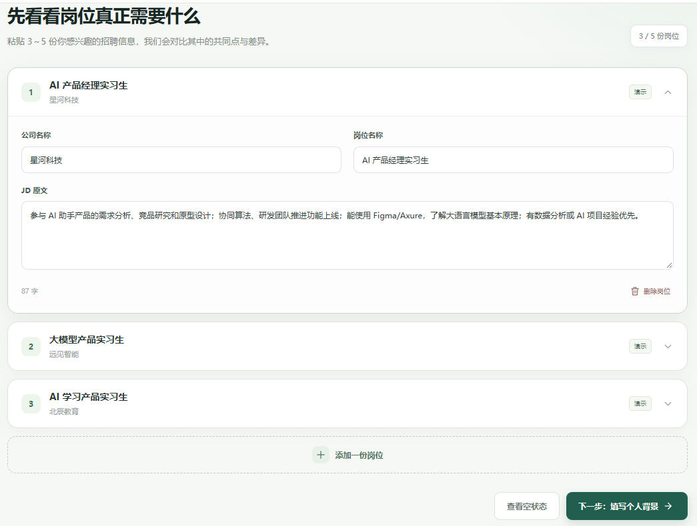
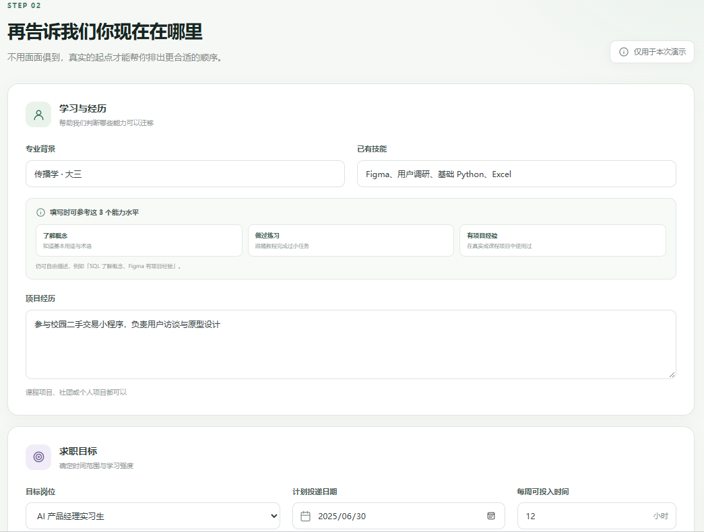
PROTOTYPE / 结果与状态
原型展示能力洞察、学习优先级，以及等待与失败时的反馈入口。
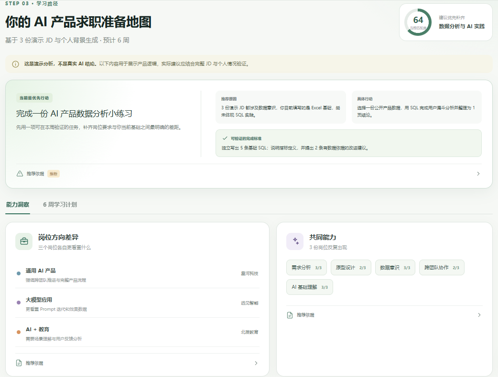
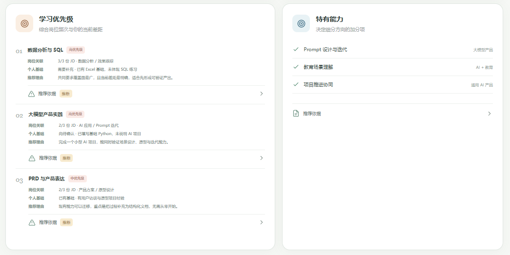
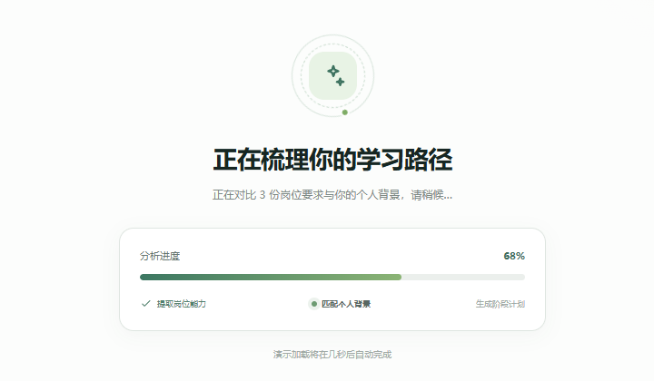
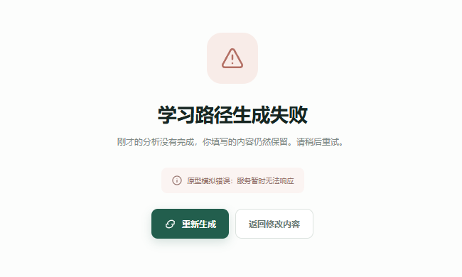
IMPLEMENTATION / 工作流项目 V0.1
以下为真实 Dify 节点画布裁切。五张截图均显示 gpt-5；仅证明截图时配置，不反推历史各次运行设置。
jd_text → LLM → 代码执行 → 输出
输出同时包含 LLM text 与代码 result。Python 节点检查已识别引文是否连续逐字存在于原 JD。
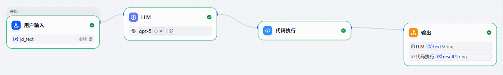
jd_1 / jd_2 / jd_3
本轮输入三份解析报告，按 8 个能力领域比较共性与差异。输入 → LLM → 输出 text。
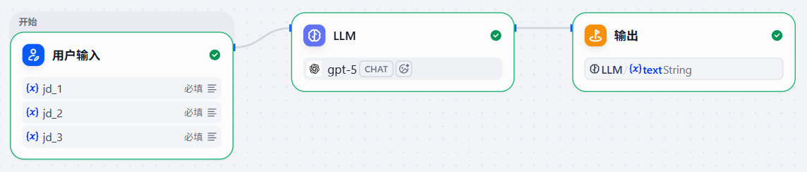
target_direction project_experience current_skills improvement_areas weekly_hours target_timeline
独立个人信息分支。输入 → LLM → 输出 text。
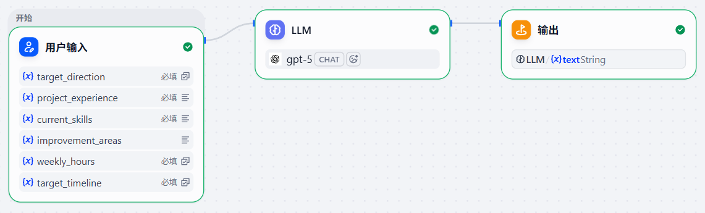
BUSINESS CHAIN / 人工串联
3 份 JD分别解析 → 多 JD 对比
个人材料个人能力画像
按归档产物整理的业务依赖示意，不是原始 Dify 自动化节点图。
jd_comparisonpersonal_profile
继承岗位依据和个人证据，区分缺口，输出优先行动。输入 → LLM → 输出 text。
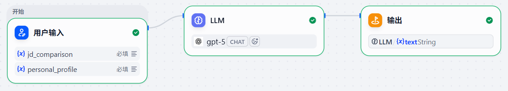
gap_analysis
将差距报告转成分周任务、交付物与验收。输入 → LLM → 输出 text。
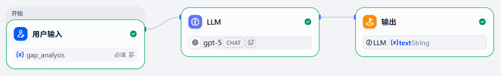
归档计划预算 46h = 任务 38h + 缓冲 8h；上游三项行动估时 13–22h，缺少明确映射，是已记录的质量问题。
EVALUATION / E2E-001 · 2026-11-24
一轮人工串联：JD 解析 3 次 + 多 JD 对比、个人画像、差距匹配、学习建议各 1 次。共 7 次运行，非 7 次完整链路。
57 / 84 条连续匹配
27 条未匹配
按引文计数合并，未另行去重；检查器自身去重规则未知。
| 测试样本 | 匹配 / 已识别 | 连续匹配率 |
|---|---|---|
| AI产品实习生（企业服务方向）集团信息系统 | 27 / 32 | 84.4% |
| AI产品经理腾讯 | 21 / 27 | 77.8% |
| 语音大模型AI平台产品实习生Data语音 | 9 / 25 | 36.0% |
| 合计 | 57 / 84 | 67.9% |
百分比由归档计数计算；岗位为历史测试材料，不代表当前在招。
检查器识别到的引文中，有多少能在原 JD 中逐字连续找到。省略号、标点差异与片段拼接都可能导致未匹配。
这不是模型准确率或幻觉率；未识别格式不计入分母。匹配也不保证推理正确；没有独立测试集或修复前后对照。
LESSONS / 失败与下一步
| 代表性失败 | 影响 | 下一步验证方向 · 尚未修复复测 |
|---|---|---|
| 省略号拼接引文Data语音 25 条中仅 9 条连续匹配 | 证据难以直接定位。 | 逐字引用规则 + 同样本回归 + 人工语义核验。 |
| 加分项在下游遗漏BUG-008：Demo／作品集加分信息 | 比较报告丢失准备依据。 | 关键字段清单，逐阶段检查信息保留。 |
| 职责被升级为明确要求BUG-018：完整闭环推进等要求 | 可能改变门槛判断与行动排序。 | 保留上游等级和原文，核对跨模块一致性。 |
| 估时与缩减验收不一致BUG-025/026：13–22h 与 38h任务 | 计划的执行成本不清晰。 | 对齐任务、工时、缩减范围与验收。 |
经营助手方向的可迁移思路：输入理解、背景画像、依据校验与行动约束。尚未证明经营场景效果。
本人：结合求职场景确定方向，在 AI 辅助下搭建原型和工作流，运行真实输入、人工串联与保存输出，核对进度。
AI：协助产品拆解、Prompt／代码、质量分析与迭代建议；历史问题评测及优先级含 AI 分析，本次文案、设计与制作亦由 AI 辅助。